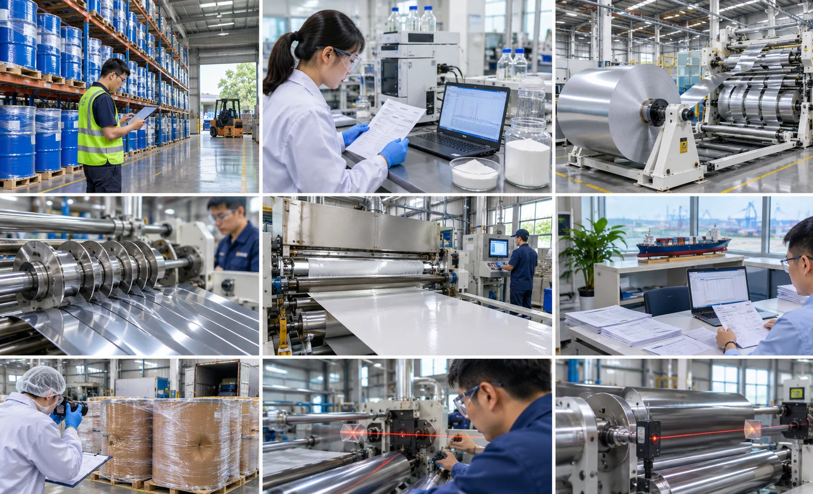
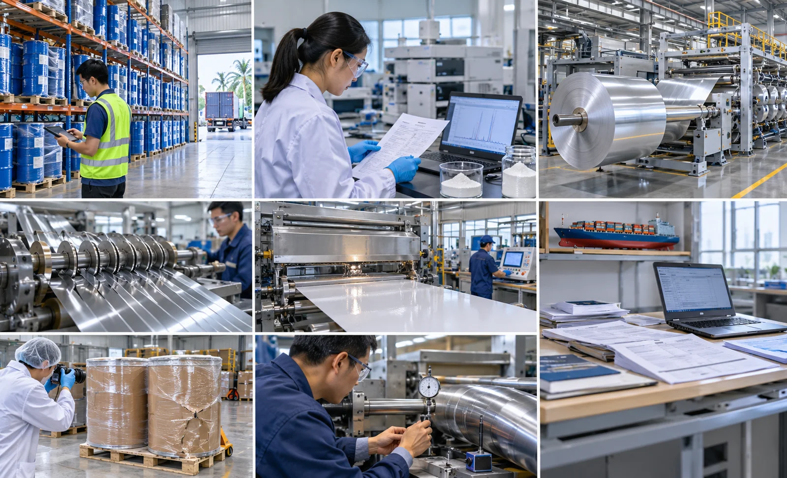

Published November 7, 2026 | By HDPTH Technical Editorial Team

Most web-handling complaints — a web that wanders to one side, wrinkles that appear only above a certain speed, finished rolls that telescope — trace back to a short list of physical causes; among the most common, and least visible in the buying process, are rollers that are not parallel. Alignment never appears as a quotation line item, cannot be judged from a photograph, and by the time it surfaces as a quality problem the machine is already paid for. Buyers who specify alignment instead of assuming it avoid that pain at almost no cost.
What misaligned rollers cost on a slitter rewinder
When two rollers that should be parallel are not, the web takes a diagonal path: a fraction of a degree accumulates into millimetres of lateral error over the web path. The web tracks toward the open side of a converging nip, wrinkles form where the path bends, and tension redistributes so one edge carries more load. Downstream, this looks like a quality problem rather than a mechanical one — lane-to-lane length differences, blades that dull on one side, rewind rolls that drift or dish. The cost is a permanent drag on yield, blade life and roll quality, because everyone chases the symptom at its output instead of the cause at its source.
The alignment chain: unwind, process, rewind
A slitter rewinder is a chain of rollers, and the web is only as straight as the weakest link. The unwind station sets the reference: the core chuck and first idlers must be square to the machine centreline, or every lane downstream inherits the error. The process section carries the highest-risk points — driven nips, lay-on rolls and the slitting station — because a nip that closes unevenly guides and deforms the web at the same time. The rewind station closes the chain, where lateral error becomes visible as ragged or telescoping roll edges. Mating pairs matter more than single rollers: a straight idler feeding a skewed nip still produces a skewed path. Ask suppliers which positions are machined square into the frames and which rely on assembly accuracy — the answer shows how alignment will behave after shipment.

Specifying and measuring alignment tolerances
Alignment is specified with two numbers per roller or nip: angular error in millimetres per metre of roller length, and parallelism across a mating pair in millimetres over the working width. For sensitive webs, a workable specification is 0.05 mm/m angular error for web-path rollers and 0.03–0.05 mm across critical nips, tightened for wide, fast or high-tension machines. Measurement matters as much as the number: laser alignment systems measure bearing-centre positions and produce a written record, while straightedge, feeler and dial-indicator checks verify nip closure. Two rules keep the data honest — measure in operating condition, and record readings position by position rather than as an average, because the web meets each roller locally and a mean value hides the errors that matter.
Why rollers drift out of alignment in service
A machine that ships aligned does not stay aligned automatically. Foundations settle and shims creep, bearing wear introduces play that shows first as angular error, and roller coverings wear unevenly and change nip geometry. Relocation and re-rigging are the classic reset events: a machine moved without a documented survey arrives with the old errors plus new ones. The practical answer is a baseline plus a trigger list — record as-shipped alignment data in the FAT, then re-verify after relocation, foundation or bearing work, and on a fixed interval for critical nips.
Writing alignment into the order and the FAT
Alignment protection costs nothing at quotation stage and is nearly impossible to add afterwards, so put it in the requirement specification. Three clauses do the work. First, a specification line: web-path rollers aligned within the stated angular tolerance and mating nips within the stated parallelism tolerance, measured by laser alignment or an equivalent instrument. Second, an acceptance clause: the FAT protocol includes a documented alignment survey listing every web-path roller with its measured values, the instrument used and pass limits taken from the specification. Third, a documentation clause: the as-built alignment data ships with the machine as the baseline for service checks. The survey takes a day at most and converts a hidden assembly variable into a signed number you can hold.
Diagnosing symptoms back to the roller
When problems appear on a running machine, resist the urge to adjust anything immediately. Map each symptom to the roller or nip nearest its onset: a wrinkle starting at a specific roll position points at that roll or the one before it; tracking that reverses when the machine direction reverses points at a crown or alignment asymmetry; blade wear heavier on the drive side points at a nip running out of square. A web-path diagram with symptom positions marked usually narrows the candidates to two or three rollers, and a laser survey confirms which one is out and by how much — which is why diagnosis before adjustment is worth the discipline.
Related guides deepen this topic: our Slitter Rewinder Web Wrinkle Causes and Remedies: Buyer’s Guide covers the full family of wrinkle mechanisms, and the Idler Roller Selection and Maintenance: Buyer’s Guide explains how roller condition and covering wear feed the alignment picture. To see these principles engineered into a machine range, review the HDPTH high-speed slitting machines series.
Need an Alignment Specification for Your Next Machine?
Send HDPTH your web width, material and roll quality targets. Our application engineers will propose the alignment chain, tolerances and acceptance measurements we would build into the machine — and document them in the FAT protocol before the order is placed.
Submit Your Project InquiryFrequently asked questions
How parallel should slitter rewinder rollers be?
For a converting machine running sensitive webs, web-path rollers are typically aligned to within 0.05 mm per metre of angular error, and parallelism between mating nips is often held to 0.03–0.05 mm across the working width. Wide or high-tension machines may specify tighter figures. What matters is that the number, the span it applies to and the measurement method are agreed in the specification rather than discovered during commissioning.
How is roller parallelism measured on a slitter rewinder?
Common methods include laser shaft or roll alignment systems, which measure angular and offset errors between bearing centres; straightedge and feeler checks across closed nips; and tram bars or dial indicators run along roller faces. Measure in operating condition and record readings roller by roller, because an averaged figure hides local errors at the points that actually touch the web.
What are the symptoms of misaligned rollers on a slitter rewinder?
Typical signs are a web that consistently tracks to one side, edge weave that moves with speed, wrinkle patterns that start at a specific roll position, telescoping or dished finished rolls, lane-to-lane length differences, and one-sided wear on blades and nip covers. Map each symptom to the roller or nip nearest its onset before adjusting anything.
Should roller alignment be part of the factory acceptance test?
Yes. Ask for a documented alignment check in the FAT protocol: each web-path roller listed with its measured angular and parallelism values, the instrument used, and pass limits taken from the specification. Factory data also becomes the baseline for service checks, so the same method can be repeated on site throughout the machine’s life.
Can roller alignment be corrected on an existing machine?
In most cases yes: re-shimming bearing housings, re-squaring frame members, re-machining or replacing worn rollers, or adding adjustable bearing blocks on older machines. Start with a full laser survey to identify which positions are out and why, so correction work is spent on the two or three rollers that actually affect the web.